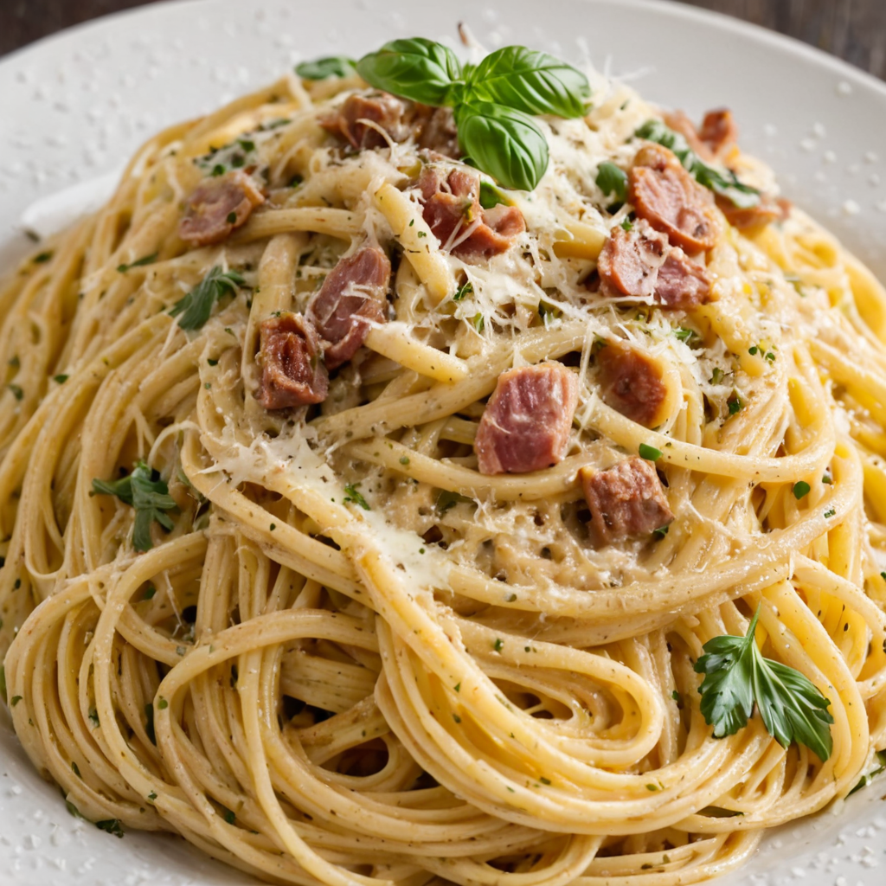

Spagetti carbonara recept

Hozzávalók:
- 300 g spagetti
- 150 g bacon, felkockázva
- 2 gerezd fokhagyma, apróra vágva
- 2 db tojás
- 50 g reszelt parmezán sajt
- Friss petrezselyem
- só
- bors
Elkészítés:
- Főzd meg a spagettit bőségesen sós vízben a csomagoláson található útmutatás szerint.
- Közben egy serpenyőben pirítsd meg a bacont közepes lángon, amíg aranybarna lesz.
- Add hozzá az apróra vágott fokhagymát a baconnal, és pirítsd további 1-2 percig.
- Egy kis tálban verd fel a tojásokat a reszelt parmezán sajttal és egy kevés frissen őrölt fekete borssal.
- Amikor a spagetti megfőtt, szűrd le, majd keverd össze azonnal a baconnel és a fokhagymával a serpenyőben.
- Vegyél le a tűzről, majd öntsd hozzá a tojásos-parmezános keveréket a spagettire, és gyorsan keverd össze, hogy a tojás ne dermedjen meg.
- Szolgáld fel azonnal friss petrezselyemmel megszórva.